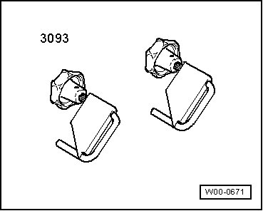
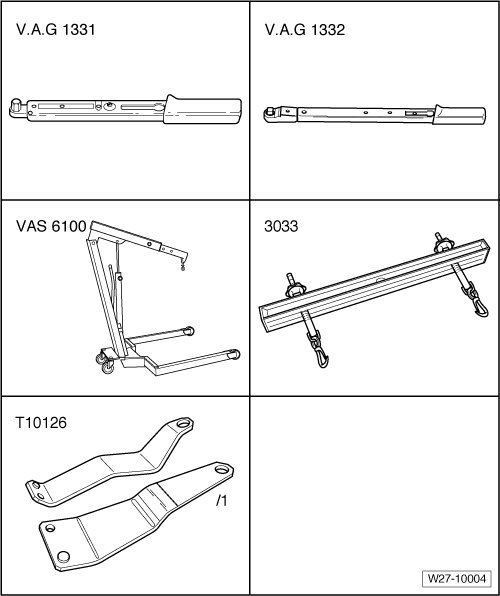
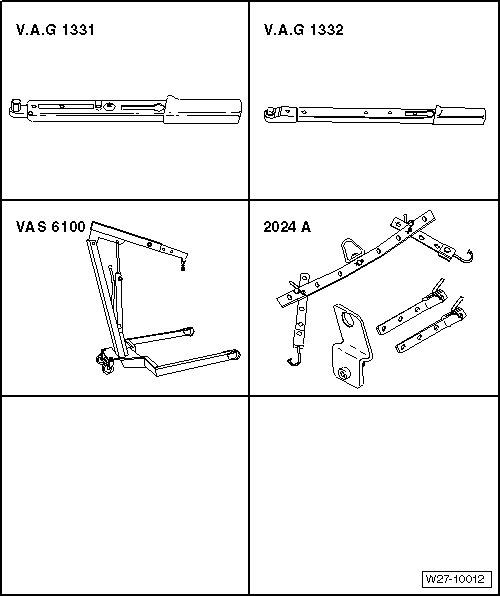
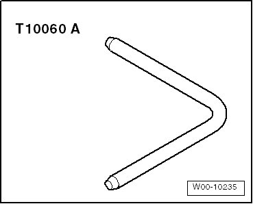
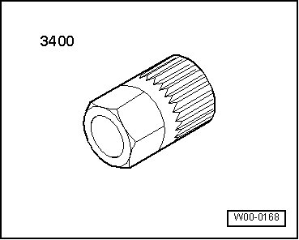
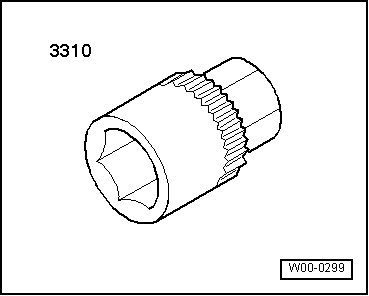

Battery, Starter, Generator and Cruise Control
Special Tools
Special tools, testers and auxiliary items required
• Vehicle Diagnostic, Testing and Information System (VAS 5051A)

• Diagnostic cable (VAS 5051/6A)

• Bolt M8 x 50 (commercially available - pressure bolt for ribbed belt tensioner)
• Hose clamps up to 40 mm dia. (VAS 3093)

• Torque Wrench (V.A.G 1331/)
• Torque Wrench (V.A.G 1332/)
• Shop crane (VAS 6100)
• Lifting tackle (3033)
• Transportation plates (T10126)
• Transportation plates (T10126/1)

• Lifting tackle (2024 A)

• Mandrel (T10060 A)

• Multi-point adapter (VAS 3400)

• Socket (VAS 3310)
